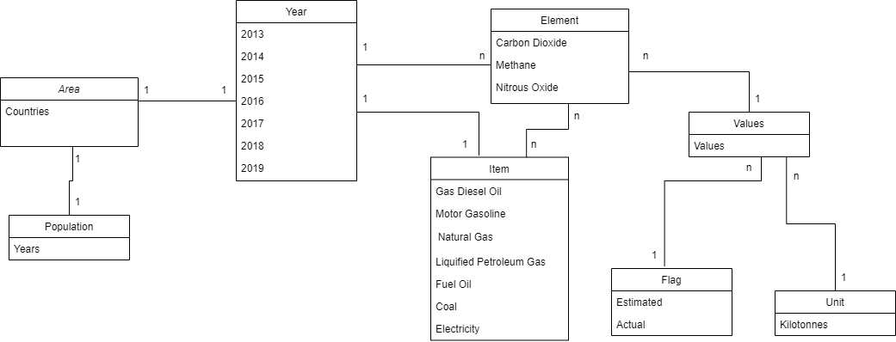

Greenhouse Gas Emissions in Agriculture
The data set used in this report contains Greenhouse gas emissions like Carbon Dioxide(CO2), Nitrous oxide(N2O) and Methane(CH4) from direct on farm energy use related to fuel combustion and electricity generation in Agriculture.
The data set contains all countries and their emissions of these green house gasses for every type of fuel combustion. The Fuels include:
- Gas-Diesel Oil
- Motor Gasoline
- Natural Gas (Including LNG)
- Liquefied Petroleum Gas (LPG)
- Fuel Oil
- Coal
- Electricity
This data is also divided further on the basis of year. There is data for the years 2013 to 2019 for every country for every emission for all the fuels stated above.
The following is a DBSchema for the dataset:
